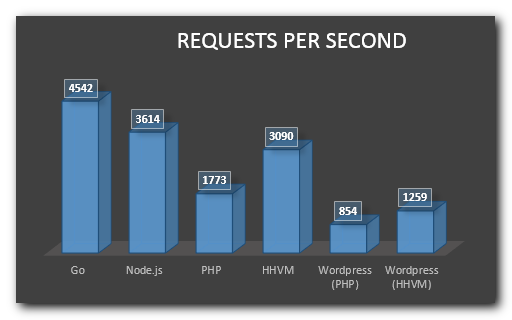
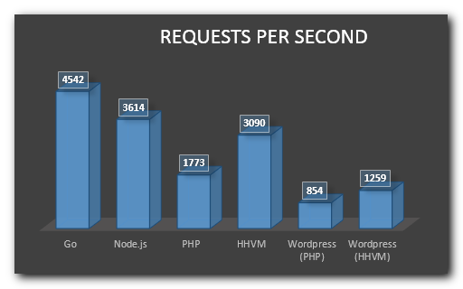
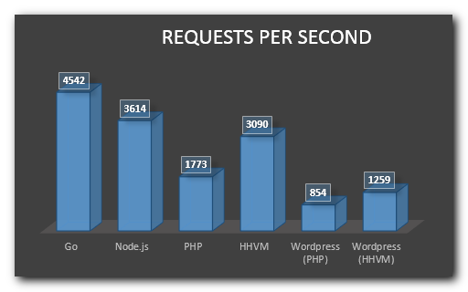

Node.js® is a JavaScript runtime built on Chrome's V8 JavaScript engine. Node.js uses an event-driven, non-blocking I/O model that makes it lightweight and efficient. Node.js' package ecosystem, npm, is the largest ecosystem of open source libraries in the world.
Note: V8 compiles Javascript into machine code on the fly!
Node is FAST
Being built on Google Chrome's V8 JavaScript Engine, Node.js library is very fast in code execution.

Asynchronous and Event Driven
All APIs of Node.js library are asynchronous that is, non-blocking. There is no sleep on Node.
The internals
The trick? The most important and critical parts are written in C/C++
Single Threaded but Highly Scalable
Node.js uses a single threaded model with event looping.
Oh.. and you know, universal (isomorphic) web applications.
Fast to learn, fast to code, fast to execute
It's perfect for an agile environment, you can quickly build an MVP and
keep iterating until you have all the features you need.
Misconceptions
Tooling is too cumbersome
Node !== Frontend
You don't need the same tooling on the backend than you need on the frontend. Node v6 (soon to become LTS) supports most of ES6 (96% at the time of this presentation), no need for transpiling.
No need for gulp/grunt, npm scripts can solve all your needs (start, test, build, etc).
Misconceptions
NPM installs a bunch of nested dependencies
As of NPM v3 dependencies are installed in a flatten file structure, if the same package
is needed in a bunch of dependencies it's only installed once.
Misconceptions
You need a lot of micro-dependencies
No need for frameworks and all their baggage.
To write a proper microservice you really only need 3 packages, the implementation is up to you.
A server (such as restify)
A logger (such as bunyan)
A db handler/model (such as mongoose)
Or a fetch library if your data lives somewhere else (such as node-fetch)
asyncStuff1()
.then( asyncStuff2 )
.then( asyncStuff3 )
.then( asyncStuff4 )
.then( asyncStuff5 )
.catch( error => {
//Write only one error handler
//All errors will come here
})
Misconceptions
Is not reliable
Node has grown a lot and fast lately, there was troubled times at the beginning, but
it now has a strong open source foundation behind it, and a robust community making it
more secure, fast and reliable every day.
My favorites
Isomorphic SSR
Websockets
JSON
ES6
Arrow functions x => x * 2
Promises
Short notations in general { prop }
Deconstruction { prop1, prop2 } = obj
End of part 1
Q&A
"Any application that can be written in JavaScript, will eventually be written in JavaScript"
When you see lots of nested if or/and lots of else statements:
Cut down the elses
One if deep
Functional programming
Principles
A set of patterns when we write our code:
Small single purpose functions
Pure functions
No side effects
Data should be immutable
Avoid non predictable values (i.e. Date)
Stateless
Composable
ROI
Testable
Portable (reusable)
Memoizable
Parallelizable
Less prone to bugs
More readable
Language prerequisites
Functions are "first-class" objects
Functions can be assigned to a variable
Higher-order functions
Functions can be passed as a parameter to another function
Functions can return other functions
Intermission: Arrow functions
//Before
var a = function( arg1, arg2 ) {
//doStuff
return something;
};
//With ES6
const a = ( arg1, arg2 ) => {
//doStuff
return something;
};
//If your function has only one expression and its a return
const a = ( arg1, arg2 ) => expression;
//If your function has only one argument
const a = arg1 => expression;
Higher-order functions for Arrays
Map
const a = [ 1, 2, 3, 4 ];
/* Multiply all the elements by 2 */
a.map( x => x * 2 );
//[ 2, 4, 6, 8 ]
Higher-order functions for Arrays
forEach
const a = [ 1, 2, 3, 4 ];
/* Log every array element */
a.forEach( x => console.log(x) );
//1
//2
//3
//4
Higher-order functions for Arrays
filter
const a = [ 1, 2, 3, 4 ];
/* Return an array with pair numbers */
a.filter( x => x % 2 === 0 );
//[ 2, 4 ]
Higher-order functions for Arrays
reduce
const a = [ 1, 2, 3, 4 ];
/* Sum all elements of the array */
a.reduce( ( previous, current ) => previous + current, 0 );
//10
const b = [ 'John Smith', 'George Clooney' ];
/* Produce an object with arrays for all firstNames and lastNames */
b.reduce( ( previous, current ) => {
let parts = current.split(' ');
previous.firstNames.push( parts[0] );
previous.lastNames.push( parts[1] );
return previous;
}, {
firstNames: [],
lastNames: []
});
//{ firstNames: [ 'John', 'George' ],
// lastNames: [ 'Smith', 'Clooney' ] }
Initial code
const c = [
{ name: 'John', vote: 'leave', age: 60 },
{ name: 'Mary', vote: 'remain', age: 25 },
{ name: 'Dorothy', vote: 'leave', age: 75 },
{ name: 'Mark', vote: 'remain', age: 35 },
];
/* Calculate average age of remain and leave voters */
let leaveAgeSum = 0, leaveVoters = 0, remainAgeSum = 0, remainVoters = 0;
for ( let i in c ) {
let voter = c[i];
if ( voter.vote === 'leave' ) {
leaveAgeSum += voter.age;
leaveVoters++;
}
if ( voter.vote === 'remain' ) {
remainAgeSum += voter.age;
remainVoters++;
}
}
let leaveAvg = leaveAgeSum / leaveVoters;
//67.5
let remainAvg = remainAgeSum / remainVoters;
//30
Applying what we learned about higher-order functions for Arrays
const c = [
{ name: 'John', vote: 'leave', age: 60 },
{ name: 'Mary', vote: 'remain', age: 25 },
{ name: 'Dorothy', vote: 'leave', age: 75 },
{ name: 'Mark', vote: 'remain', age: 35 },
];
/* Calculate average age of remain and leave voters */
let leaveVoters = c.filter( x => x.vote === 'leave' );
let leaveAgeSum = leaveVoters.reduce( ( p, c ) => p + c.age, 0 );
let leaveAvg = leaveAgeSum / leaveVoters.length
//67.5
let remainVoters = c.filter( x => x.vote === 'remain' );
let remainAgeSum = remainVoters.reduce( ( p, c ) => p + c.age, 0 );
let remainAvg = remainAgeSum / remainVoters.length;
//30
Create pure functions
const filterVoters = ( c, type ) => c.filter( x => x.vote === type );
const sumAge = c => c.reduce( ( p, c ) => p + c.age, 0 );
const calcAvg = ( sum, total ) => sum / total;
Make them chainable
const filterVoters = ( c, type ) => c.filter( x => x.vote === type );
const sumAge = c => ({
sum : c.reduce( ( p, c ) => p + c.age, 0 ),
total: c.length
});
const calcAvg = ( params ) => params.sum / params.total;
calcAvg( sumAge( filterVoters( c, 'leave' ) ) );
//67.5
calcAvg( sumAge( filterVoters( c, 'remain' ) ) );
//30
Intermission: Promises
They're useful for async stuff
const doSomethingAsync = ( a ) => {
return new Promise(( resolve, reject) => {
asyncThing(( err, result) => {
if ( err ) return reject( err );
return resolve( result );
})
})
};
doSomethingAsync( a )
.then( x => console.log(x) )
.catch( err => console.error(err) )
Intermission: Promises
But they're also useful for non async stuff
const multiplyByTwo = ( a ) => {
if ( isNaN(a) ) return Promise.reject( 'Not a number' );
return Promise.resolve( a * 2 );
};
multiplyByTwo( a )
.then( x => console.log(x) )
.catch( err => console.error(err) )
Use Promise.resolve
const filterVoters = ( c, type ) => Promise.resolve(
c.filter( x => x.vote === type )
);
const sumAge = c => Promise.resolve({
sum : c.reduce( ( p, c ) => p + c.age, 0 ),
total: c.length
});
const calcAvg = ( params ) => Promise.resolve(
params.sum / params.total
);
filterVoters( c, 'leave' )
.then(sumAge)
.then(calcAvg)
.then( x => console.log(x) );
//67.5
filterVoters( c, 'remain' )
.then(sumAge)
.then(calcAvg)
.then( x => console.log(x) );
//30
Error handling: Promise.reject
const filterVoters = ( c, type ) => {
if ( !c.length ) return Promise.reject('Empty array');
return Promise.resolve( c.filter( x => x.vote === type ) )
};
const sumAge = c => Promise.resolve({
sum : c.reduce( ( p, c ) => p + c.age, 0 ),
total: c.length
});
const calcAvg = ( params ) => Promise.resolve(
params.sum / params.total
);
filterVoters( [], 'leave' )
.then(sumAge)
.then(calcAvg)
.then( x => console.log(x) )
.catch( error => console.log('Error!', error) );
//Error! Empty array
Recap
Use array higher-order functions
Create small pure functions
Make them reusable
Make them chainable
Test them
End of part 2
Q&A
"Developers proficient in functional programming are going to be
in large demand in the very near future."
 
